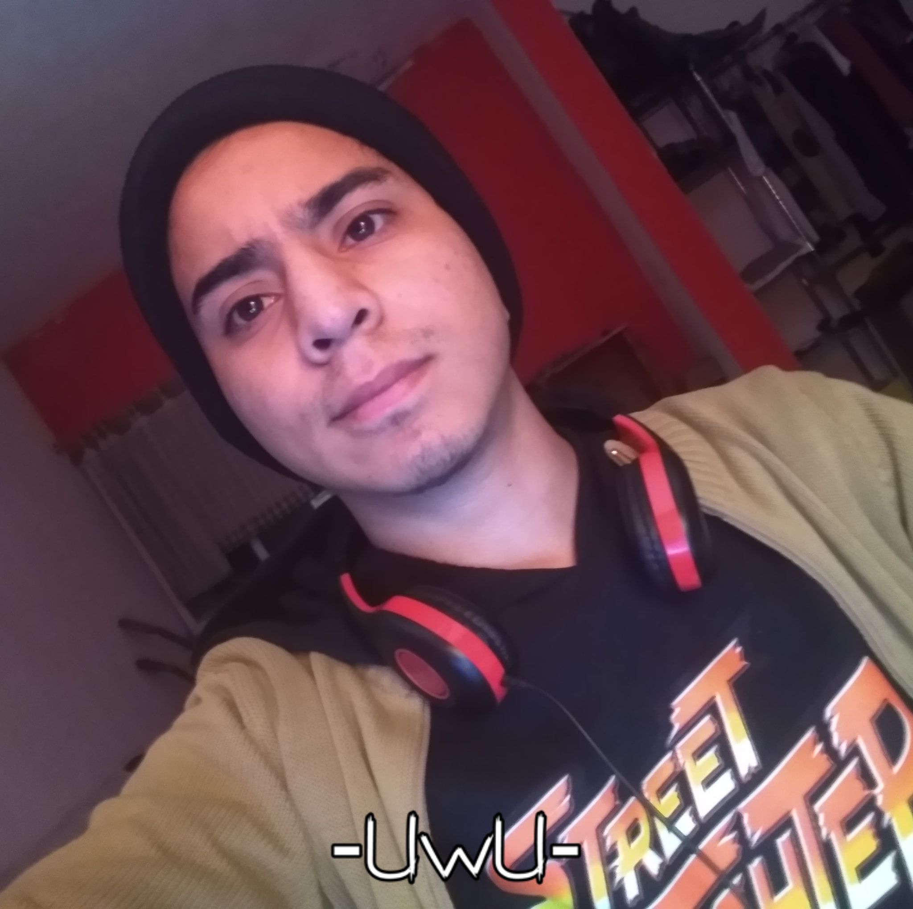
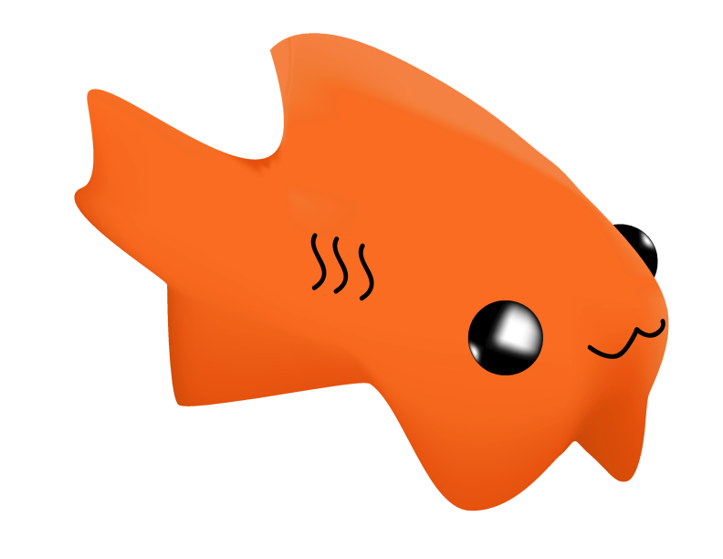

¿Quien soy?
Soy Erik Daniel Ramírez Mares, tengo 19 años y me gusta estar aprender todo lo que sea interesante de saber, soy puntual y en los encargos que se me dejen.

Soy Erik Daniel Ramírez Mares, tengo 19 años y me gusta estar aprender todo lo que sea interesante de saber, soy puntual y en los encargos que se me dejen.
Mi logo:

En mis tiempos libres me gusta dibujar, esta leyendo cosas interesantes, ver videos educativos, aprender guitarra y practicar voleibol
Gmail:
danielrmzmares@gmail